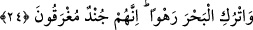
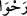
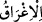
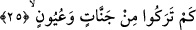

şudur: Allah Teâlâ Hz. Mûsâ’nın (a.s.) duâsını kabûl etti ve şöyle buyurdu: Ey Mûsâ
İsrâil oğullarını düşmanın gâfil olduğu gecenin bir vaktinde Mısır’dan çıkar. Geceleyin
kullarımı bana getir.
“Çünkü takib edileceksiniz” ifâdesi gece yürütme emrinin gerekçesidir. Yani Firavun
ve ordusu sizin geceleyin gizlice Mısır’dan çıktığınızı öğrendiklerinde sizi öldürmek
için takibe alacaklardır. Denizin kenarına geldiğinizde yarılıp yolların belirmesi için
Asânı denize vur ki İsrâil oğulları bu şekilde karşıya geçebilsinler.
24. “Denizi (yarıp toplumunu geçirdikten sonra olduğu gibi) açık bırak. Çünkü
onlar boğulacak bir ordudur.”
“Denizi” Kızıl Denizi; yahut Nil nehrini daha meşhur ve açık olan Kızıl Deniz
olduğudur, “açık bırak” “
/rahvâ” kelimesi masdar olup mübâlağa için denize isim
olarak verilmiştir. Geniş yarık ve açık demektir. Yani denizi açıklık sahibi yahut hâli
üzere geniş olarak bırak, demektir. Firavun’un ve kavminin seni takip edeceğinden
endişe etme. Yahut sen ve kavmin geçtikten sonra denizi olduğu gibi sakin bırak. Açılan
yolun kapanması için değneğinle denize vurma. Denizi bulunduğu halden değiştirme ki
Firavun ve onun kavmi olan Kıptîler denizde açılan yola girsinler. Nihâyet onlar da
denizde açılan yola girince Allah Teâlâ yolu onların üzerine kapatacaktır. Yollar ona
sâkin ve rahat geçilebilir gibi görünmüştü. Buna göre rahven sâkin ve hareketsiz demek
olur. Çünkü Hz. Mûsâ ve kavminin geçmeleri sırasında deniz büyük bir dağ gibi
hareketsiz kalmıştır.
“Çünkü onlar boğulacak bir ordudur.” Bu ifâde denizin hâli üzere bırakılması
emrinin gerekçesidir. Yahut bunlar savaş için hazır ordudur demektir. “
/İğrak”
boğulmak, “
/gark” suyun dibine inmek ve orada boğulup kalmak demektir.
Fakîr (Bursevî) der ki: Firavun su ile ve köşkünün bostanının ağaçlarının altından
ırmakların akmasıyla büyüklenince cezâsı da ameli cinsinden oldu. Bunun için Allah
Teâlâ Hz. Mûsâ’ya (a.s.) karaya değil de, sahilden deniz tarafına yürümesini emretti.
Yoksa Allah Teâlâ bu Kıptîlerden önceki birçok kâfirlerde olduğu gibi düşmanını
herhangi bir sebeple karada da helâk etmeye kadirdir.
25. Onlar geride nice şeyler bıraktılar: Bahçeler, çeşmeler.
“Onlar geride” sizin geçiş yollarınızda “nice şeyler bıraktılar” “Bahçeler” çok